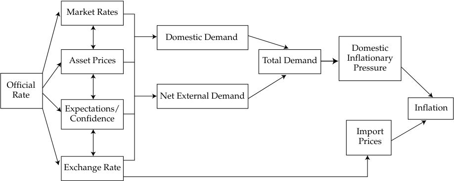

Learning Module 4 Monetary Policy - Part 1: Introduction
Volume 2: Economics
Learning Module 4 Monetary Policy
Part 1/3: Introduction (PDF Pages 113–123)
Tập 2: Kinh tế học (Volume 2: Economics)
Học phần 4: Chính sách Tiền tệ (Learning Module 4: Monetary Policy)
Phần 1/3: Giới thiệu (Introduction) (Trang PDF 113–123)
L E A R N I N G M O D U L E
H Ọ C P H Ầ N (L E A R N I N G M O D U L E)
4
4
Monetary Policy
Chính sách Tiền tệ (Monetary Policy)
LEARNING OUTCOMES
MỤC TIÊU HỌC TẬP (LEARNING OUTCOMES)
| Mastery | The candidate should be able to: |
|---|---|
| describe the roles and objectives of central banks | |
| describe tools used to implement monetary policy tools and the monetary transmission mechanism, and explain the relationships between monetary policy and economic growth, inflation, interest, and exchange rates |
|
| describe qualities of effective central banks; contrast their use of inflation, interest rate, and exchange rate targeting in expansionary or contractionary monetary policy; and describe the limitations of monetary policy |
|
| explain the interaction of monetary and fiscal policy |
| Mức độ thành thạo (Mastery) | Ứng viên cần có khả năng (The candidate should be able to): |
|---|---|
| mô tả vai trò và mục tiêu của các ngân hàng trung ương (describe the roles and objectives of central banks) | |
| mô tả các công cụ được sử dụng để thực thi chính sách tiền tệ và cơ chế truyền dẫn tiền tệ, đồng thời giải thích mối quan hệ giữa chính sách tiền tệ với tăng trưởng kinh tế, lạm phát, lãi suất và tỷ giá hối đoái (describe tools used to implement monetary policy tools and the monetary transmission mechanism, and explain the relationships between monetary policy and economic growth, inflation, interest, and exchange rates) | |
| mô tả những phẩm chất của các ngân hàng trung ương hiệu quả; đối chiếu việc sử dụng mục tiêu lạm phát, lãi suất và tỷ giá hối đoái của chúng trong chính sách tiền tệ mở rộng hoặc thu hẹp; và mô tả những hạn chế của chính sách tiền tệ (describe qualities of effective central banks; contrast their use of inflation, interest rate, and exchange rate targeting in expansionary or contractionary monetary policy; and describe the limitations of monetary policy) | |
| giải thích sự tương tác giữa chính sách tiền tệ và chính sách tài khóa (explain the interaction of monetary and fiscal policy) |
INTRODUCTION
GIỚI THIỆU (INTRODUCTION)
Central banks play several important roles in modern economies. These roles include being the monopoly supplier of the currency, the banker to the government and the bankers’ bank, the lender of last resort, the regulator and supervisor of the payments system, the conductor of monetary policy, and the supervisor of the banking system. Central banks have three primary tools available to them: open market operations, the refinancing rate, and reserve requirements. The success of central banks is thought to depend on three key concepts: central bank independence, credibility, and transparency. Both fiscal and monetary policy can alter aggregate demand, but they do so through differing channels with differing impacts on the composition of aggregate demand.
Các ngân hàng trung ương (Central banks) đóng một số vai trò quan trọng trong các nền kinh tế hiện đại. Những vai trò này bao gồm việc là nhà cung cấp độc quyền đồng tiền (monopoly supplier of the currency), ngân hàng của chính phủ và ngân hàng của các ngân hàng (banker to the government and the bankers’ bank), người cho vay cuối cùng (lender of last resort), cơ quan quản lý và giám sát hệ thống thanh toán (regulator and supervisor of the payments system), người điều hành chính sách tiền tệ (conductor of monetary policy), và cơ quan giám sát hệ thống ngân hàng (supervisor of the banking system). Các ngân hàng trung ương có ba công cụ chính sẵn có: nghiệp vụ thị trường mở (open market operations), lãi suất tái cấp vốn (refinancing rate), và tỷ lệ dự trữ bắt buộc (reserve requirements). Sự thành công của các ngân hàng trung ương được cho là phụ thuộc vào ba khái niệm then chốt: tính độc lập (independence), mức độ tín nhiệm (credibility) và tính minh bạch (transparency) của ngân hàng trung ương. Cả chính sách tài khóa và chính sách tiền tệ đều có thể làm thay đổi tổng cầu, nhưng chúng thực hiện điều đó thông qua các kênh khác nhau với những tác động khác nhau lên cơ cấu của tổng cầu.
LEARNING MODULE OVERVIEW
TỔNG QUAN HỌC PHẦN (LEARNING MODULE OVERVIEW)
- Central banks are the sole supplier of domestic currency, the banker to the government and the bankers’ bank, the lender of last resort, the regulator and supervisor of the payments system, the conductor of monetary policy, and the supervisor of the banking system.
- Các ngân hàng trung ương là nhà cung cấp duy nhất đồng nội tệ, ngân hàng của chính phủ và ngân hàng của các ngân hàng, người cho vay cuối cùng, cơ quan quản lý và giám sát hệ thống thanh toán, người điều hành chính sách tiền tệ, và cơ quan giám sát hệ thống ngân hàng.
-
The highest profile role that central banks assume is the operation of a country’s monetary policy, which refers to central bank activities that are directed toward influencing the quantity of money and credit in an economy.
-
The overarching goal of most central banks in maintaining price stability is the associated goal of controlling inflation.
-
Central banks can manipulate the money supply in one of three ways: open market operations, its official policy rate and associated actions in the repo market, and manipulation of official reserve requirements.
-
The central bank target interest rate (or policy rate ) is used to influence short- and long-term interest rates and, ultimately, real economic activity.
-
The central bank’s policy rate works through the economy via the following interconnected channels: short-term interest rates, changes in the values of key asset prices, the exchange rate, and the expectations of economic agents.
-
The success of inflation-targeting by central banks depends on three key characteristics: central bank independence, credibility, and transparency.
-
Many emerging market economies choose to operate monetary policy by targeting their currency’s exchange rate, rather than an explicit level of domestic inflation.
-
A major problem for central banks as they try to manage the money supply to influence the real economy is that they cannot control the amount of money that households and corporations put in banks on deposit, nor can they easily control the willingness of banks to create money by expanding credit.
-
Both fiscal and monetary policy can alter aggregate demand, but they do so through differing channels with differing impacts on the composition of aggregate demand.
-
Both fiscal and monetary policies suffer from a lack of precise current knowledge of the economy, because periodic economic data are released with a time lag and are subject to revision.
-
The interaction between monetary and fiscal policies is evident in the Ricardian equivalence because if tax cuts have no impact on private spending due to higher expected future taxes, then this may lead policy makers to favor monetary tools.
-
Vai trò nổi bật nhất mà các ngân hàng trung ương đảm nhận là vận hành chính sách tiền tệ của một quốc gia, đề cập đến các hoạt động của ngân hàng trung ương hướng tới việc tác động đến lượng tiền và tín dụng trong một nền kinh tế.
-
Mục tiêu bao trùm của hầu hết các ngân hàng trung ương trong việc duy trì sự ổn định giá cả (price stability) là mục tiêu liên quan đến việc kiểm soát lạm phát.
-
Các ngân hàng trung ương có thể điều tiết cung tiền theo một trong ba cách: nghiệp vụ thị trường mở (open market operations), lãi suất chính sách chính thức (official policy rate) và các hành động liên quan trên thị trường mua lại (repo market), và điều tiết các yêu cầu dự trữ bắt buộc chính thức (official reserve requirements).
-
Lãi suất mục tiêu (hay lãi suất chính sách – policy rate) của ngân hàng trung ương được sử dụng để tác động đến lãi suất ngắn hạn và dài hạn và, suy cho cùng, là hoạt động kinh tế thực.
-
Lãi suất chính sách của ngân hàng trung ương phát huy tác dụng trong nền kinh tế thông qua các kênh có mối liên hệ chặt chẽ với nhau sau đây: lãi suất ngắn hạn, những thay đổi trong giá trị của các mức giá tài sản chủ chốt, tỷ giá hối đoái, và kỳ vọng của các chủ thể kinh tế.
-
Sự thành công của việc nhắm mục tiêu lạm phát (inflation-targeting) của các ngân hàng trung ương phụ thuộc vào ba đặc điểm then chốt: tính độc lập (independence), mức độ tín nhiệm (credibility) và tính minh bạch (transparency) của ngân hàng trung ương.
-
Nhiều nền kinh tế thị trường mới nổi lựa chọn vận hành chính sách tiền tệ bằng cách nhắm mục tiêu tỷ giá hối đoái (exchange rate targeting) của đồng tiền nước mình, hơn là một mức lạm phát trong nước cụ thể.
-
Một vấn đề lớn đối với các ngân hàng trung ương khi họ cố gắng quản lý cung tiền để tác động đến nền kinh tế thực là họ không thể kiểm soát được lượng tiền mà các hộ gia đình và tập đoàn gửi vào ngân hàng dưới dạng tiền gửi, cũng như không thể dễ dàng kiểm soát được sự sẵn lòng tạo tiền của các ngân hàng thông qua việc mở rộng tín dụng.
-
Cả chính sách tài khóa và chính sách tiền tệ đều có thể làm thay đổi tổng cầu, nhưng chúng thực hiện điều đó thông qua các kênh khác nhau với những tác động khác nhau lên cơ cấu của tổng cầu.
-
Cả chính sách tài khóa và chính sách tiền tệ đều chịu ảnh hưởng từ việc thiếu kiến thức hiện hành chính xác về nền kinh tế, bởi vì dữ liệu kinh tế định kỳ được công bố với một độ trễ thời gian và phải chịu sự điều chỉnh.
-
Sự tương tác giữa chính sách tiền tệ và chính sách tài khóa thể hiện rõ trong sự tương đương Ricardian (Ricardian equivalence) bởi vì nếu việc cắt giảm thuế không có tác động lên chi tiêu tư nhân do kỳ vọng thuế trong tương lai cao hơn, thì điều này có thể khiến các nhà hoạch định chính sách ưu tiên các công cụ tiền tệ hơn.
ROLE OF CENTRAL BANKS
VAI TRÒ CỦA CÁC NGÂN HÀNG TRUNG ƯƠNG (ROLE OF CENTRAL BANKS)
describe the roles and objectives of central banks
Mô tả vai trò và mục tiêu của các ngân hàng trung ương (describe the roles and objectives of central banks)
Roles of Central Banks and Objectives of Monetary Policy
Vai trò của Ngân hàng Trung ương và Mục tiêu của Chính sách Tiền tệ (Roles of Central Banks and Objectives of Monetary Policy)
Central banks play several key roles in modern economies. Generally, a central bank is the sole supplier of the domestic currency, the banker to the government and the bankers’ bank, the lender of last resort, the regulator and supervisor of the payments system, the conductor of monetary policy, and the supervisor of the banking system. Let us examine these roles in turn.
Các ngân hàng trung ương đóng một số vai trò then chốt trong các nền kinh tế hiện đại. Nhìn chung, ngân hàng trung ương là nhà cung cấp duy nhất đồng nội tệ, ngân hàng của chính phủ và ngân hàng của các ngân hàng, người cho vay cuối cùng, cơ quan quản lý và giám sát hệ thống thanh toán, người điều hành chính sách tiền tệ, và cơ quan giám sát hệ thống ngân hàng. Hãy cùng xem xét lần lượt từng vai trò này.
In its earliest form, money could be exchanged for a prespecified precious commodity, usually gold, and promissory notes were issued by many private banks. Today, however, state-owned institutions—usually central banks—are designated in law as being the monopoly suppliers of a currency. Initially, these monopolists supplied money that could be converted into a prespecified amount of gold; they adhered to a gold standard . For example, until 1931, bank notes issued by Britain’s central bank, the Bank of England, could be redeemed at the bank for a prespecified amount of gold. But Britain, like most other major economies, abandoned this convertibility principle in the first half of the twentieth century. Money in all major economies today is not convertible by law into anything else, but it is, in law, legal tender . This means that it must be accepted when offered in exchange for goods and services. Money that is not convertible into any other commodity is known as fiat money . Fiat money derives its value through government decree and because people accept it for payment of goods and services and for debt repayment.
Ở hình thức sơ khai nhất, tiền có thể được trao đổi lấy một loại hàng hóa quý hiếm được quy định trước, thường là vàng, và các kỳ phiếu (promissory notes) được phát hành bởi nhiều ngân hàng tư nhân. Tuy nhiên, ngày nay, các định chế thuộc sở hữu nhà nước—thường là các ngân hàng trung ương—được pháp luật chỉ định là nhà cung cấp độc quyền của một đồng tiền. Ban đầu, các nhà độc quyền này cung cấp tiền có thể chuyển đổi thành một lượng vàng được quy định trước; họ tuân theo bản vị vàng (gold standard). Ví dụ, cho đến năm 1931, tiền giấy (bank notes) do ngân hàng trung ương của Anh, tức Ngân hàng Trung ương Anh (Bank of England), phát hành có thể được quy đổi tại ngân hàng để lấy một lượng vàng được quy định trước. Nhưng Anh, giống như hầu hết các nền kinh tế lớn khác, đã từ bỏ nguyên tắc khả năng chuyển đổi này vào nửa đầu thế kỷ XX. Tiền ở tất cả các nền kinh tế lớn ngày nay theo luật không thể chuyển đổi thành bất kỳ thứ gì khác, nhưng về mặt pháp lý, nó là phương tiện thanh toán hợp pháp (legal tender). Điều này có nghĩa là nó phải được chấp nhận khi được đưa ra để trao đổi lấy hàng hóa và dịch vụ. Tiền không thể chuyển đổi thành bất kỳ hàng hóa nào khác được gọi là tiền pháp định (fiat money). Tiền pháp định có được giá trị của nó thông qua sắc lệnh của chính phủ và bởi vì mọi người chấp nhận nó để thanh toán cho hàng hóa và dịch vụ cũng như để trả nợ.
As long as fiat money is acceptable to everyone as a medium of exchange, and it holds its value over time, then it also will be able to serve as a unit of account. However, once an economy has moved to a system of fiat money, the role of the supplier of that money becomes even more crucial because they could, for example, expand the supply of this money indefinitely should they wish to do so. Central banks, therefore, play a crucial role in modern economies as the suppliers and guardians of the value of their fiat currencies and as institutions charged with the role of maintaining confidence in their currencies. As the sole suppliers of domestic currency, central banks are at the center of economic life. As such, they assume other roles in addition to being the suppliers and guardians of the value of their currencies.
Miễn là tiền pháp định được mọi người chấp nhận như một phương tiện trao đổi (medium of exchange), và nó giữ được giá trị của mình theo thời gian, thì nó cũng sẽ có thể đóng vai trò như một đơn vị hạch toán (unit of account). Tuy nhiên, một khi nền kinh tế đã chuyển sang hệ thống tiền pháp định, vai trò của nhà cung cấp đồng tiền đó càng trở nên sống còn hơn bởi vì họ có thể, ví dụ, mở rộng nguồn cung tiền này vô thời hạn nếu họ muốn làm như vậy. Do đó, các ngân hàng trung ương đóng một vai trò cốt tử trong các nền kinh tế hiện đại với tư cách là những người cung cấp và bảo vệ giá trị của các đồng tiền pháp định của họ và là những định chế được giao trọng trách duy trì niềm tin vào đồng tiền của mình. Với tư cách là nhà cung cấp duy nhất đồng nội tệ, các ngân hàng trung ương nằm ở vị trí trung tâm của đời sống kinh tế. Vì vậy, họ đảm nhận thêm các vai trò khác bên cạnh việc là người cung cấp và người bảo vệ giá trị đồng tiền của mình.
Most central banks act as the banker to the government and to other banks. They also act as a lender of last resort to banks. Because the central bank effectively has the capacity to print money, it is in the position to be able to supply the funds to banks that are facing crisis. The facts that economic agents know that the central bank stands ready to provide the liquidity required by any of the banks under its jurisdiction and that they trust government bank deposit insurance help to prevent bank runs in the first place. However, the recent financial crisis has shown that this knowledge is not always sufficient to deter a bank run.
Hầu hết các ngân hàng trung ương đóng vai trò là ngân hàng của chính phủ và của các ngân hàng khác. Họ cũng đóng vai trò là người cho vay cuối cùng (lender of last resort) đối với các ngân hàng. Bởi vì ngân hàng trung ương về thực chất có năng lực in tiền, nên nó ở vị thế có thể cung cấp nguồn vốn cho các ngân hàng đang đối mặt với khủng hoảng. Thực tế là các chủ thể kinh tế biết rằng ngân hàng trung ương luôn sẵn sàng cung cấp thanh khoản cần thiết cho bất kỳ ngân hàng nào thuộc thẩm quyền quản lý của mình và họ tin tưởng vào bảo hiểm tiền gửi ngân hàng của chính phủ đã giúp ngăn chặn hiện tượng rút tiền hàng loạt (bank runs) ngay từ đầu. Tuy nhiên, cuộc khủng hoảng tài chính gần đây đã cho thấy rằng sự hiểu biết này không phải lúc nào cũng đủ để ngăn chặn một cuộc rút tiền hàng loạt tại ngân hàng.
EXAMPLE 1
VÍ DỤ 1 (EXAMPLE 1)
The Northern Rock Bank Run
Cuộc Rút tiền Hàng loạt tại Ngân hàng Northern Rock (The Northern Rock Bank Run)
In the latter part of the summer of 2007, the fall in US house prices and the related implosion of the US sub-prime mortgage market became the catalyst for a global liquidity crisis. Banks began to hoard cash and refused to lend to other banks at anything other than extremely punitive interest rates through the interbank market. This caused severe difficulties for a UK mortgage bank, Northern Rock. Northern Rock’s mortgage book had expanded rapidly in the preceding years as it borrowed aggressively from the money markets. It is now clear that this expansion was at the expense of loan quality. The then–UK regulatory authority, the Financial Services Authority (FSA), later reported in 2008 that Northern Rock’s lending practices did not pay due regard to either the credit quality of the mortgagees or the values of the properties on which the mortgages
Vào cuối mùa hè năm 2007, sự sụt giảm giá nhà tại Hoa Kỳ và sự sụp đổ liên quan của thị trường thế chấp dưới chuẩn (sub-prime mortgage market) của Hoa Kỳ đã trở thành chất xúc tác cho một cuộc khủng hoảng thanh khoản toàn cầu. Các ngân hàng bắt đầu tích trữ tiền mặt và từ chối cho các ngân hàng khác vay thông qua thị trường liên ngân hàng ngoại trừ ở những mức lãi suất trừng phạt cực kỳ cao. Điều này đã gây ra những khó khăn nghiêm trọng cho một ngân hàng thế chấp của Vương quốc Anh là Northern Rock. Danh mục cho vay thế chấp của Northern Rock đã mở rộng nhanh chóng trong những năm trước đó khi ngân hàng này vay nợ ồ ạt từ các thị trường tiền tệ. Giờ đây đã rõ ràng là sự mở rộng này đã phải đánh đổi bằng chất lượng khoản vay. Cơ quan quản lý của Vương quốc Anh lúc bấy giờ là Cơ quan Dịch vụ Tài chính (Financial Services Authority – FSA) sau đó đã báo cáo vào năm 2008 rằng các thông lệ cho vay của Northern Rock đã không chú trọng đúng mức đến chất lượng tín dụng của người vay thế chấp lẫn giá trị của các bất động sản dùng làm tài sản bảo đảm cho các khoản thế chấp
were secured. Being at the worst end of banking practice and relying heavily on international capital markets for its funding, Northern Rock was therefore susceptible to a global reduction in liquidity. As the liquidity crisis took hold, Northern Rock found that it could not replace its maturing money market borrowings. On 12 September 2007, in desperate need of liquidity, Northern Rock’s board approached the UK central bank to ask for the necessary funds.
đó. Nằm ở nhóm tệ nhất về thông lệ ngân hàng và phụ thuộc nặng nề vào các thị trường vốn quốc tế để huy động nguồn vốn, Northern Rock do đó rất dễ bị tổn thương trước sự sụt giảm thanh khoản toàn cầu. Khi cuộc khủng hoảng thanh khoản bùng phát mạnh, Northern Rock nhận thấy rằng họ không thể tái tài trợ các khoản vay trên thị trường tiền tệ đang đáo hạn của mình. Vào ngày 12 tháng 9 năm 2007, trong cơn khát thanh khoản tuyệt vọng, hội đồng quản trị của Northern Rock đã tiếp cận ngân hàng trung ương Vương quốc Anh để xin nguồn vốn cần thiết.
However, the news of Northern Rock’s perilous liquidity position became known by the public and, more pertinently, by Northern Rock’s retail depositors. On 14 September, having heard the news, queues began to form outside Northern Rock branches as depositors tried to withdraw their savings. On that day, it was estimated that Northern Rock depositors withdrew around GBP1 billion, representing 5 percent of Northern Rock’s deposits. Further panic ensued as investors in “internet-only” Northern Rock accounts could not withdraw their money because of the collapse of Northern Rock’s website. A further GBP1 billion was withdrawn over the next two days.
Tuy nhiên, tin tức về vị thế thanh khoản hiểm nghèo của Northern Rock đã bị công chúng và, sát sườn hơn, là những người gửi tiền bán lẻ (retail depositors) của Northern Rock biết được. Vào ngày 14 tháng 9, sau khi nghe tin tức, những hàng người dài bắt đầu hình thành bên ngoài các chi nhánh của Northern Rock khi những người gửi tiền cố gắng rút tiền tiết kiệm của họ. Vào ngày hôm đó, ước tính những người gửi tiền tại Northern Rock đã rút khoảng 1 tỷ GBP, tương đương 5% tổng tiền gửi của Northern Rock. Sự hoảng loạn tiếp tục lan rộng khi các nhà đầu tư có tài khoản “chỉ giao dịch qua internet” (internet-only) của Northern Rock không thể rút tiền của họ do trang web của Northern Rock bị sập. Thêm 1 tỷ GBP nữa đã bị rút ra trong hai ngày tiếp theo.
Northern Rock’s share price dropped rapidly, as did the share prices of other similar UK banks. The crisis therefore threatened to engulf more than one bank. To prevent contagion, the chancellor of the exchequer announced on 17 September that the UK government would guarantee all Northern Rock deposits. This announcement was enough to stabilize the situation and given that lending to Northern Rock was now just like lending to the government, deposits actually started to rise again.
Giá cổ phiếu của Northern Rock lao dốc nhanh chóng, cũng như giá cổ phiếu của các ngân hàng tương tự khác tại Vương quốc Anh. Do đó, cuộc khủng hoảng đe dọa nhấn chìm nhiều hơn một ngân hàng. Để ngăn chặn hiệu ứng lây lan (contagion), Bộ trưởng Bộ Tài chính Anh (Chancellor of the Exchequer) vào ngày 17 tháng 9 đã tuyên bố rằng chính phủ Vương quốc Anh sẽ bảo lãnh toàn bộ tiền gửi tại Northern Rock. Tuyên bố này đủ để ổn định tình hình và xét việc cho Northern Rock vay giờ đây cũng giống hệt như cho chính phủ vay, lượng tiền gửi thực tế đã bắt đầu tăng trở lại.
Eventually Northern Rock was nationalized by the UK government, with the hope that at some time in the future it could be privatized once its balance sheet had been repaired.
Cuối cùng, Northern Rock đã bị quốc hữu hóa bởi chính phủ Vương quốc Anh, với hy vọng rằng vào một thời điểm nào đó trong tương lai, nó có thể được tư nhân hóa trở lại một khi bảng cân đối kế toán của nó đã được khôi phục.
Central banks often are charged by the government to supervise the banking system, or at least to supervise those banks that they license to accept deposits. In some countries, this role is undertaken by a separate authority. In other countries, the central bank can be jointly responsible with another body for the supervision of its banks.
Các ngân hàng trung ương thường được chính phủ giao trọng trách giám sát hệ thống ngân hàng, hoặc ít nhất là giám sát những ngân hàng mà họ cấp phép nhận tiền gửi. Ở một số quốc gia, vai trò này được đảm nhận bởi một cơ quan độc lập riêng biệt. Ở các quốc gia khác, ngân hàng trung ương có thể đồng chịu trách nhiệm với một cơ quan khác trong việc giám sát các ngân hàng của mình.
Exhibit 1 lists the banking supervisors in the G–10 countries; central banks are underlined. As the exhibit shows, most but not all bank systems have a single supervisor, which is not necessarily a central bank. A few countries, such as Germany and the United States, have more than one supervisor.
Minh họa 1 liệt kê các cơ quan giám sát ngân hàng tại các quốc gia G–10; các ngân hàng trung ương được gạch chân (hoặc chú thích). Như minh họa cho thấy, hầu hết nhưng không phải tất cả các hệ thống ngân hàng đều có một cơ quan giám sát duy nhất, và cơ quan đó không nhất thiết phải là ngân hàng trung ương. Một vài quốc gia, chẳng hạn như Đức và Hoa Kỳ, có nhiều hơn một cơ quan giám sát.
Exhibit 1: Banking Supervision in the G–10
Minh họa 1: Giám sát Ngân hàng trong khối G–10 (Exhibit 1: Banking Supervision in the G–10)
| Country | Institutions |
|---|---|
| Belgium | Banking and Finance Commission |
| Canada | Office of the Superintendent of Financial Institutions |
| France | fi Commission Bancaire |
| Germany | Federal Banking Supervisory Office; Deutsche Bundesbank |
| Italy | fi Bank of Italy |
| Japan | Financial Services Agency |
| Netherlands | Bank of Netherlands |
| Sweden | Swedish Financial Supervisory Authority |
| Switzerland | Federal Commission |
| United Kingdom | Bank of England |
| United States | Office of the Comptroller of the Currency; Federal Reserve; Federal Deposit Insurance Corporation |
| Quốc gia (Country) | Các định chế (Institutions) |
|---|---|
| Bỉ (Belgium) | Ủy ban Ngân hàng và Tài chính (Banking and Finance Commission) |
| Canada | Văn phòng Giám sát các Định chế Tài chính (Office of the Superintendent of Financial Institutions) |
| Pháp (France) | Ủy ban Ngân hàng (Commission Bancaire) |
| Đức (Germany) | Cơ quan Giám sát Ngân hàng Liên bang (Federal Banking Supervisory Office); Ngân hàng Trung ương Đức (Deutsche Bundesbank) |
| Ý (Italy) | Ngân hàng Trung ương Ý (Bank of Italy) |
| Nhật Bản (Japan) | Cơ quan Dịch vụ Tài chính (Financial Services Agency) |
| Hà Lan (Netherlands) | Ngân hàng Trung ương Hà Lan (Bank of Netherlands) |
| Thụy Điển (Sweden) | Cơ quan Giám sát Tài chính Thụy Điển (Swedish Financial Supervisory Authority) |
| Thụy Sĩ (Switzerland) | Ủy ban Liên bang (Federal Commission) |
| Vương quốc Anh (United Kingdom) | Ngân hàng Trung ương Anh (Bank of England) |
| Hoa Kỳ (United States) | Văn phòng Kiểm soát Tiền tệ (Office of the Comptroller of the Currency); Cục Dự trữ Liên bang (Federal Reserve); Tổng công ty Bảo hiểm Tiền gửi Liên bang (Federal Deposit Insurance Corporation) |
The United Kingdom is an interesting case study in this regard. Until May 1997, the Bank of England had statutory responsibility for banking supervision in the United Kingdom. In May 1997, banking supervision was removed from the Bank of England and assigned to a new agency, the Financial Services Authority (FSA). However, the removal of responsibility for banking supervision from the central bank was seen by some as being a contributory factor in the run on the mortgage bank Northern Rock, and generally as a contributory factor in the recent banking crisis. Because of this perceived weakness in the separation of the central bank from banking supervision, the Bank of England regained responsibility for banking supervision and regulation in 2013.
Vương quốc Anh là một nghiên cứu tình huống thú vị về khía cạnh này. Cho đến tháng 5 năm 1997, Ngân hàng Trung ương Anh (Bank of England) có trách nhiệm theo luật định đối với việc giám sát ngân hàng tại Vương quốc Anh. Vào tháng 5 năm 1997, việc giám sát ngân hàng đã được tách khỏi Ngân hàng Trung ương Anh và giao cho một cơ quan mới là Cơ quan Dịch vụ Tài chính (Financial Services Authority – FSA). Tuy nhiên, việc tách trách nhiệm giám sát ngân hàng ra khỏi ngân hàng trung ương đã bị một số người coi là yếu tố góp phần dẫn đến cuộc rút tiền hàng loạt tại ngân hàng thế chấp Northern Rock, và nhìn chung là một yếu tố góp phần dẫn đến cuộc khủng hoảng ngân hàng gần đây. Do điểm yếu được nhận thấy này trong việc tách rời ngân hàng trung ương khỏi hoạt động giám sát ngân hàng, Ngân hàng Trung ương Anh đã giành lại trách nhiệm giám sát và quản lý ngân hàng vào năm 2013.
Perhaps the least appreciated role of a central bank is its role in the payments system . Central banks are usually asked to oversee, regulate, and set standards for a country’s payments system. For the system to work properly, procedures must be robust and standardized. The central bank will usually oversee the payments system and will also be responsible for the successful introduction of any new processes. Given the international nature of finance, the central bank will also be responsible for coordinating payments systems internationally with other central banks.
Có lẽ vai trò ít được đánh giá đúng mức nhất của một ngân hàng trung ương là vai trò của nó trong hệ thống thanh toán (payments system). Các ngân hàng trung ương thường được yêu cầu giám sát, quản lý và thiết lập các tiêu chuẩn cho hệ thống thanh toán của một quốc gia. Để hệ thống vận hành trơn tru, các quy trình thủ tục phải vững chắc và được chuẩn hóa. Ngân hàng trung ương thường sẽ giám sát hệ thống thanh toán và cũng sẽ chịu trách nhiệm cho việc áp dụng thành công bất kỳ quy trình mới nào. Xét bản chất quốc tế của tài chính, ngân hàng trung ương cũng sẽ chịu trách nhiệm điều phối các hệ thống thanh toán trên phạm vi quốc tế với các ngân hàng trung ương khác.
Most central banks are responsible for managing their country’s foreign currency reserves as well as its gold reserves. With regard to the latter, even though countries abandoned the gold standard in the early part of the twentieth century, the world’s central bankers still hold large quantities of gold. As such, if central banks were to decide to sell significant proportions of their gold reserves, it could potentially depress gold prices.
Hầu hết các ngân hàng trung ương đều chịu trách nhiệm quản lý dự trữ ngoại hối (foreign currency reserves) cũng như dự trữ vàng (gold reserves) của quốc gia mình. Liên quan đến dự trữ vàng, mặc dù các quốc gia đã từ bỏ bản vị vàng vào đầu thế kỷ XX, các ngân hàng trung ương trên thế giới vẫn nắm giữ một lượng vàng lớn. Do đó, nếu các ngân hàng trung ương quyết định bán ra một tỷ lệ đáng kể dự trữ vàng của họ, điều đó có khả năng làm giảm giá vàng.
Finally, central banks are usually responsible for the operation of a country’s monetary policy . This is arguably the highest profile role that these important organizations assume. Recall that monetary policy refers to central bank activities that are directed toward influencing the quantity of money and credit in an economy. As the sole supplier of a country’s domestic currency, central banks are in the ideal position to implement and determine monetary policy.
Cuối cùng, các ngân hàng trung ương thường chịu trách nhiệm vận hành chính sách tiền tệ (monetary policy) của một quốc gia. Đây có thể coi là vai trò nổi bật nhất mà các tổ chức quan trọng này đảm nhận. Hãy nhớ lại rằng chính sách tiền tệ đề cập đến các hoạt động của ngân hàng trung ương hướng tới việc tác động đến lượng tiền và tín dụng trong một nền kinh tế. Với tư cách là nhà cung cấp duy nhất đồng nội tệ của một quốc gia, các ngân hàng trung ương ở vị thế lý tưởng để thực thi và quyết định chính sách tiền tệ.
To summarize, central banks assume a range of roles and responsibilities. They do not all assume responsibility for the supervision of the banks, but all of the following roles normally are assumed by the central bank:
Tóm lại, các ngân hàng trung ương đảm nhận một loạt các vai trò và trách nhiệm. Không phải tất cả các ngân hàng trung ương đều đảm nhận trách nhiệm giám sát các ngân hàng, nhưng tất cả các vai trò sau đây thông thường đều do ngân hàng trung ương đảm nhận:
-
Monopoly supplier of the currency;
-
Banker to the government and the bankers’ bank;
-
Lender of last resort;
-
Regulator and supervisor of the payments system;
-
Conductor of monetary policy; and
-
Supervisor of the banking system.
-
Nhà cung cấp độc quyền đồng tiền (Monopoly supplier of the currency);
-
Ngân hàng của chính phủ và ngân hàng của các ngân hàng (Banker to the government and the bankers’ bank);
-
Người cho vay cuối cùng (Lender of last resort);
-
Cơ quan quản lý và giám sát hệ thống thanh toán (Regulator and supervisor of the payments system);
-
Người điều hành chính sách tiền tệ (Conductor of monetary policy); và
-
Cơ quan giám sát hệ thống ngân hàng (Supervisor of the banking system).
The Objectives of Monetary Policy
Các Mục tiêu của Chính sách Tiền tệ (The Objectives of Monetary Policy)
Central banks fulfill a variety of important roles, but for what overarching purpose? A perusal of the websites of the world’s central banks will reveal a wide range of explanations of their objectives. Their objectives are clearly related to their roles, and so there is frequent mention of objectives related to the stability of the financial system and to the payments systems. Some central banks are charged with doing all they can to maintain full employment and output. Some also have related but less tangible roles, such as maintaining confidence in the financial system , or even to promote understanding of the financial sector . Most seem to acknowledge explicitly one overarching objective—the objective of maintaining price stability .
Các ngân hàng trung ương thực hiện nhiều vai trò quan trọng khác nhau, nhưng vì mục đích bao trùm nào? Việc đọc kỹ trang web của các ngân hàng trung ương trên thế giới sẽ hé lộ một loạt các lời giải thích về mục tiêu của họ. Mục tiêu của họ rõ ràng có liên quan đến vai trò của họ, và vì vậy thường xuyên có sự đề cập đến các mục tiêu liên quan đến sự ổn định của hệ thống tài chính và các hệ thống thanh toán. Một số ngân hàng trung ương được giao nhiệm vụ làm tất cả những gì có thể để duy trì toàn dụng nhân công và sản lượng. Một số khác cũng có những vai trò liên quan nhưng ít hữu hình hơn, chẳng hạn như duy trì niềm tin vào hệ thống tài chính, hoặc thậm chí là thúc đẩy sự hiểu biết về khu vực tài chính. Hầu hết dường như đều thừa nhận một cách rõ ràng một mục tiêu bao trùm—đó là mục tiêu duy trì sự ổn định giá cả (price stability).
So, although central banks usually have to perform many roles, most specify an overarching objective. Exhibit 2 lists what we might call the primary objectives of a number of central banks, from both developed market and emerging market economies.
Vì vậy, mặc dù các ngân hàng trung ương thường phải thực hiện nhiều vai trò, hầu hết đều chỉ rõ một mục tiêu bao trùm. Minh họa 2 liệt kê những gì chúng ta có thể gọi là các mục tiêu chính của một số ngân hàng trung ương, từ cả các nền kinh tế thị trường phát triển và thị trường mới nổi.
Exhibit 2: The Objectives of Central Banks
Minh họa 2: Các Mục tiêu của Ngân hàng Trung ương (Exhibit 2: The Objectives of Central Banks)
The Central Bank of Brazil
Ngân hàng Trung ương Brazil (The Central Bank of Brazil)
Its institutional mission is to “ensure the stability of the currency’s purchasing power and a solid and efficient financial system.”
Sứ mệnh định chế của ngân hàng này là “đảm bảo sự ổn định sức mua của đồng tiền và một hệ thống tài chính vững chắc, hiệu quả.”
The European Central Bank
Ngân hàng Trung ương Châu Âu (The European Central Bank – ECB)
“[T]o maintain price stability is the primary objective of the Euro system and of the single monetary policy for which it is responsible. This is laid down in the Treaty on the Functioning of the European Union, Article 127 (1).”
“Duy trì sự ổn định giá cả là mục tiêu chính của Hệ thống Euro (Euro system) và của chính sách tiền tệ chung mà hệ thống này chịu trách nhiệm. Điều này được quy định trong Hiệp ước về Chức năng của Liên minh Châu Âu (Treaty on the Functioning of the European Union), Điều 127 (1).”
“Without prejudice to the objective of price stability”, the euro system will also “support the general economic policies in the Community with a view to contributing to the achievement of the objectives of the Community.” These include a “high level of employment” and “sustainable and non-inflationary growth.”
“Không làm phương hại đến mục tiêu ổn định giá cả”, hệ thống đồng euro cũng sẽ “hỗ trợ các chính sách kinh tế chung trong Cộng đồng với mục đích góp phần đạt được các mục tiêu của Cộng đồng.” Những mục tiêu này bao gồm “mức việc làm cao” và “tăng trưởng bền vững và không gây lạm phát.”
The US Federal Reserve
Cục Dự trữ Liên bang Hoa Kỳ (The US Federal Reserve)
“The Federal Reserve sets the nation’s monetary policy to promote the objectives of maximum employment, stable prices, and moderate longterm interest rates.”
“Cục Dự trữ Liên bang thiết lập chính sách tiền tệ của quốc gia nhằm thúc đẩy các mục tiêu toàn dụng nhân công tối đa (maximum employment), giá cả ổn định (stable prices), và lãi suất dài hạn ở mức vừa phải (moderate long-term interest rates).”
The Reserve Bank of Australia
Ngân hàng Dự trữ Úc (The Reserve Bank of Australia)
“It is the duty of the Reserve Bank Board, within the limits of its powers, to ensure that the monetary and banking policy of the Bank is directed to the greatest advantage of the people of Australia and that the powers of the Bank ... are exercised in such a manner as, in the opinion of the Reserve Bank Board, will best contribute to:
“Nhiệm vụ của Hội đồng Ngân hàng Dự trữ, trong giới hạn quyền hạn của mình, là đảm bảo rằng chính sách tiền tệ và ngân hàng của Ngân hàng được hướng tới lợi ích lớn nhất của người dân Úc và quyền hạn của Ngân hàng ... được thực thi theo cách thức mà, theo ý kiến của Hội đồng Ngân hàng Dự trữ, sẽ đóng góp tốt nhất vào:
-
a. the stability of the currency of Australia;
-
b. the maintenance of full employment in Australia; and
-
c. the economic prosperity and welfare of the people of Australia.”
-
a. sự ổn định của đồng tiền Úc;
-
b. việc duy trì toàn dụng nhân công tại Úc; và
-
c. sự thịnh vượng kinh tế và phúc lợi của người dân Úc.”
The Bank of Korea
Ngân hàng Trung ương Hàn Quốc (The Bank of Korea)
“The primary purpose of the Bank, as prescribed by the Bank of Korea Act of 1962, is the pursuit of price stability.”
“Mục đích chính của Ngân hàng, như được quy định bởi Đạo luật Ngân hàng Trung ương Hàn Quốc năm 1962, là theo đuổi sự ổn định giá cả.”
Source: “Central Bank and Monetary Authority Websites,” Bank for International Settlements, http:// www .bis .org/ cbanks .htm.
Nguồn (Source): “Trang web của các Ngân hàng Trung ương và Cơ quan Quản lý Tiền tệ” (“Central Bank and Monetary Authority Websites”), Ngân hàng Thanh toán Quốc tế (Bank for International Settlements), http://www.bis.org/cbanks.htm.
QUESTION SET
BỘ CÂU HỎI (QUESTION SET)
- A central bank is normally not the:
-
A. lender of last resort.
-
B. banker to the government and banks.
- Ngân hàng trung ương thông thường không phải là:
-
A. người cho vay cuối cùng (lender of last resort).
-
B. ngân hàng của chính phủ và của các ngân hàng.
| C.body that sets tax rates on interest on savings. Solution: |
|---|
| C is correct. A central bank is normally the lender of last resort and the banker to the banks and government, but the determination of all tax rates is normally the preserve of the government and is a fiscal policy issue. |
| 2. Which of the following_best_describes the overarching, long-run objective of most central banks? |
| A.Price stability |
| B.Fast economic growth |
| C.Current account surplus Solution: |
| A is correct. Central banks normally have a variety of objectives, but the overriding one is nearly always price stability. |
| 3. Which role is a central bank_least likely_to assume? |
| A.Lender of last resort |
| B.Supplier of the currency |
| C.Sole supervisor of banks Solution: |
| C is correct. The supervision of banks is not a role that all central banks assume. When it is a central bank’s role, responsibility may be shared with one or more entities. |
-
C. cơ quan thiết lập mức thuế suất đánh trên tiền lãi tiết kiệm.
-
Lời giải (Solution):
C là đáp án đúng. Ngân hàng trung ương thông thường là người cho vay cuối cùng và là ngân hàng của các ngân hàng và chính phủ, nhưng việc xác định tất cả các mức thuế suất thông thường là đặc quyền của chính phủ và là một vấn đề thuộc về chính sách tài khóa.
As we have discussed, one of the essential features of a monetary system is that the medium of exchange should have a relatively stable value from one period to the next. Arguably then, the overarching goal of most central banks in maintaining price stability is the associated goal of controlling inflation. Before we explore the tools central banks use to control inflation, we should first consider the potential costs of inflation. In other words, we should ask why it is that central bankers believe that it is so important to control a nominal variable.
- Điều nào sau đây mô tả đúng nhất mục tiêu bao trùm, dài hạn của hầu hết các ngân hàng trung ương?
-
A. Ổn định giá cả (Price stability)
-
B. Tăng trưởng kinh tế nhanh (Fast economic growth)
-
C. Thặng dư tài khoản vãng lai (Current account surplus)
-
Lời giải (Solution):
A là đáp án đúng. Các ngân hàng trung ương thông thường có nhiều mục tiêu khác nhau, nhưng mục tiêu quan trọng nhất gần như luôn luôn là sự ổn định giá cả.
MONETARY POLICY TOOLS AND MONETARY TRANSMISSION
- Vai trò nào ngân hàng trung ương ít có khả năng nhất sẽ đảm nhận?
-
A. Người cho vay cuối cùng (Lender of last resort)
-
B. Nhà cung cấp đồng tiền (Supplier of the currency)
-
C. Cơ quan giám sát duy nhất đối với các ngân hàng (Sole supervisor of banks)
-
Lời giải (Solution):
C là đáp án đúng. Việc giám sát các ngân hàng không phải là vai trò mà tất cả các ngân hàng trung ương đều đảm nhận. Khi đó là vai trò của ngân hàng trung ương, trách nhiệm này có thể được chia sẻ với một hoặc nhiều tổ chức khác.
3
Như chúng ta đã thảo luận, một trong những đặc điểm thiết yếu của một hệ thống tiền tệ là phương tiện trao đổi phải có giá trị tương đối ổn định từ kỳ này sang kỳ tiếp theo. Khi đó, có thể lập luận rằng mục tiêu bao trùm của hầu hết các ngân hàng trung ương trong việc duy trì sự ổn định giá cả chính là mục tiêu liên quan đến việc kiểm soát lạm phát. Trước khi khám phá các công cụ mà ngân hàng trung ương sử dụng để kiểm soát lạm phát, trước tiên chúng ta nên xem xét các chi phí tiềm tàng của lạm phát. Nói cách khác, chúng ta nên tự hỏi tại sao các nhà hoạch định ngân hàng trung ương lại tin rằng việc kiểm soát một biến số danh nghĩa lại quan trọng đến vậy.
describe tools used to implement monetary policy tools and the monetary transmission mechanism, and explain the relationships between monetary policy and economic growth, inflation, interest, and exchange rates
CÁC CÔNG CỤ CHÍNH SÁCH TIỀN TỆ VÀ TRUYỀN DẪN TIỀN TỆ (MONETARY POLICY TOOLS AND MONETARY TRANSMISSION)
3
Central banks have three primary tools available to them: open market operations, the refinancing rate, and reserve requirements.
Mô tả các công cụ được sử dụng để thực thi chính sách tiền tệ và cơ chế truyền dẫn tiền tệ, đồng thời giải thích mối quan hệ giữa chính sách tiền tệ với tăng trưởng kinh tế, lạm phát, lãi suất và tỷ giá hối đoái (describe tools used to implement monetary policy tools and the monetary transmission mechanism, and explain the relationships between monetary policy and economic growth, inflation, interest, and exchange rates)
Các ngân hàng trung ương có ba công cụ chính sẵn có: nghiệp vụ thị trường mở (open market operations), lãi suất tái cấp vốn (the refinancing rate), và yêu cầu dự trữ bắt buộc (reserve requirements).
Open Market Operations
Nghiệp vụ Thị trường Mở (Open Market Operations)
One of the most direct ways for a central bank to increase or reduce the amount of money in circulation is through open market operations . Open market operations involve the purchase and sale of government bonds from and to commercial banks or designated market makers. For example, when the central bank buys government bonds from commercial banks, this increases the reserves of private sector banks on the asset side of their balance sheets. If banks then use these surplus reserves by increasing lending to corporations and households, then broad money growth expands through the money multiplier process. Similarly, the central bank can sell government bonds to commercial banks. In so doing, the reserves of commercial banks decline, reducing their capacity to make loans (i.e., create credit) to households and corporations and thus causing broad money growth to decline through the money multiplier mechanism. In using open market operations, the central bank may target a desired level of commercial bank reserves or a desired interest rate for these reserves.
Một trong những cách trực tiếp nhất để một ngân hàng trung ương làm tăng hoặc giảm lượng tiền đang lưu thông là thông qua nghiệp vụ thị trường mở (open market operations). Nghiệp vụ thị trường mở bao gồm việc mua và bán trái phiếu chính phủ từ và cho các ngân hàng thương mại hoặc các nhà tạo lập thị trường được chỉ định (designated market makers). Ví dụ, khi ngân hàng trung ương mua trái phiếu chính phủ từ các ngân hàng thương mại, điều này làm tăng dự trữ của các ngân hàng khu vực tư nhân ở bên phần tài sản (asset side) trên bảng cân đối kế toán của họ. Nếu sau đó các ngân hàng sử dụng các khoản dự trữ dôi dư (surplus reserves) này bằng cách tăng cho vay đối với các tập đoàn và hộ gia đình, thì tăng trưởng cung tiền rộng (broad money growth) sẽ mở rộng thông qua quá trình số nhân tiền tệ (money multiplier process). Tương tự, ngân hàng trung ương có thể bán trái phiếu chính phủ cho các ngân hàng thương mại. Khi làm như vậy, dự trữ của các ngân hàng thương mại sụt giảm, làm giảm năng lực cho vay (tức là khả năng tạo tín dụng) của họ đối với các hộ gia đình và tập đoàn, và do đó làm cho tăng trưởng cung tiền rộng sụt giảm thông qua cơ chế số nhân tiền tệ. Khi sử dụng nghiệp vụ thị trường mở, ngân hàng trung ương có thể nhắm mục tiêu vào một mức dự trữ ngân hàng thương mại mong muốn hoặc một mức lãi suất mong muốn đối với các khoản dự trữ này.
The Central Bank’s Policy Rate
Lãi suất Chính sách của Ngân hàng Trung ương (The Central Bank’s Policy Rate)
The most obvious expression of a central bank’s intentions and views comes through the interest rate it sets. The name of the official interest rate (or official policy rate or just policy rate ) varies from central bank to central bank, but its purpose is to influence short- and long-term interest rates and ultimately real economic activity.
Biểu hiện rõ ràng nhất về ý định và quan điểm của một ngân hàng trung ương đến từ mức lãi suất mà nó thiết lập. Tên gọi của lãi suất chính thức (official interest rate) (hay lãi suất chính sách chính thức – official policy rate hoặc chỉ đơn giản là lãi suất chính sách – policy rate) khác nhau giữa các ngân hàng trung ương, nhưng mục đích của nó là nhằm tác động đến lãi suất ngắn hạn và dài hạn và suy cho cùng là hoạt động kinh tế thực.
The interest rate that a central bank sets and that it announces publicly is normally the rate at which it is willing to lend money to the commercial banks (although practices do vary from country to country). This policy rate can be achieved by using short-term collateralized lending rates, known as repo rates. For example, if the central bank wishes to increase the supply of money, it might buy bonds (usually government bonds) from the banks, with an agreement to sell them back at some time in the future. This transaction is known as a repurchase agreement . Normally, the maturity of repo agreements ranges from overnight to two weeks. In effect, this represents a secured loan to the banks, and the lender (in this case the central bank) earns the repo rate.
Mức lãi suất mà một ngân hàng trung ương thiết lập và công bố công khai thông thường là mức lãi suất mà tại đó ngân hàng trung ương sẵn lòng cho các ngân hàng thương mại vay tiền (mặc dù thông lệ thực tế có khác nhau giữa các quốc gia). Lãi suất chính sách này có thể đạt được bằng cách sử dụng các mức lãi suất cho vay có tài sản bảo đảm trong ngắn hạn, được gọi là lãi suất mua lại (repo rates). Ví dụ, nếu ngân hàng trung ương muốn tăng cung tiền, họ có thể mua trái phiếu (thường là trái phiếu chính phủ) từ các ngân hàng, kèm theo một thỏa thuận sẽ bán lại chúng vào một thời điểm nào đó trong tương lai. Giao dịch này được gọi là hợp đồng mua lại (repurchase agreement). Thông thường, kỳ hạn của các hợp đồng repo dao động từ qua đêm (overnight) đến hai tuần. Về bản chất, điều này đại diện cho một khoản vay có bảo đảm dành cho các ngân hàng, và người cho vay (trong trường hợp này là ngân hàng trung ương) hưởng mức lãi suất repo (repo rate).
Suppose that a central bank announces an increase in its official interest rate. Commercial banks normally would increase their base rates at the same time. A commercial bank’s base rate is the reference rate on which it bases lending rates to all other customers. For example, large corporate clients might pay the base rate plus 1 percent on their borrowing from a bank, whereas the same bank might lend money to a small corporate client at the base rate plus 3 percent. But why would commercial banks immediately increase their base or reference rates just because the central bank’s refinancing rate had increased?
Giả sử rằng một ngân hàng trung ương công bố tăng lãi suất chính thức của mình. Các ngân hàng thương mại thông thường cũng sẽ tăng lãi suất cơ sở (base rates) của họ cùng một lúc. Lãi suất cơ sở của một ngân hàng thương mại là mức lãi suất tham chiếu (reference rate) mà dựa vào đó ngân hàng xác định mức lãi suất cho vay đối với tất cả các khách hàng khác. Ví dụ, các khách hàng doanh nghiệp lớn có thể trả mức lãi suất cơ sở cộng thêm 1% cho khoản vay của họ từ ngân hàng, trong khi cùng ngân hàng đó có thể cho một khách hàng doanh nghiệp nhỏ vay tiền ở mức lãi suất cơ sở cộng thêm 3%. Nhưng tại sao các ngân hàng thương mại lại lập tức tăng lãi suất cơ sở hay lãi suất tham chiếu của họ chỉ vì lãi suất tái cấp vốn (refinancing rate) của ngân hàng trung ương đã tăng lên?
The answer is that commercial banks do not want to lend at a rate of interest below that which they are charged by the central bank. Effectively, the central bank can force commercial banks to borrow from it at this rate because it can conduct open market operations that create a shortage of money, forcing the banks to sell bonds to it with an agreed-upon repurchase price (i.e., a repurchase agreement). The repo rate would be such that the central bank earned the official refinancing rate on the transactions.
Câu trả lời là các ngân hàng thương mại không muốn cho vay ở mức lãi suất thấp hơn mức lãi suất mà họ bị ngân hàng trung ương tính phí. Về thực chất, ngân hàng trung ương có thể buộc các ngân hàng thương mại phải vay từ mình ở mức lãi suất này bởi vì ngân hàng trung ương có thể thực hiện các nghiệp vụ thị trường mở tạo ra sự thiếu hụt tiền tệ, buộc các ngân hàng phải bán trái phiếu cho ngân hàng trung ương với một mức giá mua lại đã được thỏa thuận trước (tức là một hợp đồng mua lại). Lãi suất repo sẽ được định sao cho ngân hàng trung ương thu được mức lãi suất tái cấp vốn chính thức trên các giao dịch đó.
The name of each central bank’s official refinancing rate varies. The Bank of England’s refinancing rate is the two-week repo rate . In other words, the Bank of England fixes the rate at which it is willing to lend two-week money to the banking sector. The European Central Bank’s (ECB’s) official policy rate is known as the refinancing rate , which defines the rate at which the ECB is willing to lend short-term money to the Euro area banking sector.
Tên gọi của lãi suất tái cấp vốn chính thức của mỗi ngân hàng trung ương là khác nhau. Lãi suất tái cấp vốn của Ngân hàng Trung ương Anh (Bank of England) là lãi suất repo kỳ hạn hai tuần (two-week repo rate). Nói cách khác, Ngân hàng Trung ương Anh ấn định mức lãi suất mà tại đó họ sẵn lòng cho khu vực ngân hàng vay tiền kỳ hạn hai tuần. Lãi suất chính sách chính thức của Ngân hàng Trung ương Châu Âu (ECB) được gọi là lãi suất tái cấp vốn (refinancing rate), xác định mức lãi suất mà tại đó ECB sẵn lòng cho khu vực ngân hàng thuộc Khu vực đồng Euro vay tiền ngắn hạn.
The corresponding rate in the United States is the discount rate, which is the rate for member banks borrowing directly from the Federal Reserve System. The most important interest rate used in US monetary policy is the federal funds rate . The federal
Mức lãi suất tương ứng tại Hoa Kỳ là lãi suất chiết khấu (discount rate), là mức lãi suất dành cho các ngân hàng thành viên vay trực tiếp từ Hệ thống Dự trữ Liên bang (Federal Reserve System). Mức lãi suất quan trọng nhất được sử dụng trong chính sách tiền tệ của Hoa Kỳ là lãi suất quỹ liên bang (federal funds rate). Lãi suất quỹ liên bang
funds rate (or fed funds rate ) is the interbank lending rate on overnight borrowings of reserves. The Federal Open Market Committee (FOMC) seeks to move this rate to a target level by reducing or adding reserves to the banking system by means of open market operations. The level of the rate is reviewed by the FOMC at its meetings held every six weeks (although the target can be changed between meetings, if necessary).
(hay fed funds rate) là lãi suất cho vay liên ngân hàng đối với các khoản vay dự trữ qua đêm (overnight borrowings of reserves). Ủy ban Thị trường Mở Liên bang (Federal Open Market Committee – FOMC) tìm cách đưa mức lãi suất này về mức mục tiêu bằng cách giảm hoặc bổ sung dự trữ vào hệ thống ngân hàng thông qua nghiệp vụ thị trường mở. Mức lãi suất này được FOMC xem xét lại tại các cuộc họp được tổ chức sáu tuần một lần (mặc dù mục tiêu có thể được thay đổi giữa các cuộc họp, nếu cần thiết).
Through the setting of a policy rate, a central bank can manipulate the amount of money in the money markets. Generally speaking, the higher the policy rate, the higher the potential penalty that banks will have to pay to the central bank if they run short of liquidity, the greater their willingness will be to reduce lending, and the more likely it will be that broad money growth will shrink.
Thông qua việc thiết lập một mức lãi suất chính sách, ngân hàng trung ương có thể điều tiết lượng tiền trên các thị trường tiền tệ. Nói chung, lãi suất chính sách càng cao, mức phạt tiềm tàng mà các ngân hàng sẽ phải trả cho ngân hàng trung ương nếu họ bị thiếu hụt thanh khoản càng cao, sự sẵn lòng cắt giảm cho vay của họ sẽ càng lớn, và tăng trưởng cung tiền rộng sẽ càng có nhiều khả năng thu hẹp lại.
Reserve Requirements
Yêu cầu Dự trữ Bắt buộc (Reserve Requirements)
The third primary way in which central banks can limit or increase the supply of money in an economy is through the reserve requirement . We already have seen that the money creation process is more powerful the lower the percentage reserve requirement of banks. So, a central bank could restrict money creation by raising the reserve requirements of banks. However, this policy tool is not used much today in developed market economies. Indeed, some central banks, such as the Bank of England, no longer even set minimum reserve requirements for the banks under their jurisdiction. Changing reserve requirements frequently is disruptive for banks. For example, if a central bank increased the reserve requirements, a bank that was short on reserves might have to cease its lending activities until it had built up the necessary reserves, because deposits would be unlikely to rise quickly enough for the bank to build its reserves in this way. However, reserve requirements are still actively used in many emerging market countries to control lending and remain a potential policy tool for those central banks that do not currently use it.
Cách thức chính thứ ba mà các ngân hàng trung ương có thể hạn chế hoặc làm tăng cung tiền trong một nền kinh tế là thông qua yêu cầu dự trữ bắt buộc (reserve requirement). Chúng ta đã thấy rằng quá trình tạo tiền có sức mạnh càng lớn khi tỷ lệ phần trăm dự trữ bắt buộc của các ngân hàng càng thấp. Vì vậy, một ngân hàng trung ương có thể hạn chế việc tạo tiền bằng cách nâng cao yêu cầu dự trữ bắt buộc đối với các ngân hàng. Tuy nhiên, công cụ chính sách này không còn được sử dụng nhiều ngày nay tại các nền kinh tế thị trường phát triển. Thật vậy, một số ngân hàng trung ương, chẳng hạn như Ngân hàng Trung ương Anh, thậm chí không còn thiết lập các yêu cầu dự trữ tối thiểu đối với các ngân hàng thuộc thẩm quyền quản lý của họ. Việc thay đổi yêu cầu dự trữ bắt buộc thường xuyên gây ra sự xáo trộn đối với các ngân hàng. Ví dụ, nếu một ngân hàng trung ương tăng yêu cầu dự trữ bắt buộc, một ngân hàng đang thiếu hụt dự trữ có thể phải ngừng các hoạt động cho vay của mình cho đến khi tích lũy đủ mức dự trữ cần thiết, bởi vì tiền gửi sẽ khó có khả năng tăng đủ nhanh để ngân hàng tích lũy dự trữ theo cách này. Tuy nhiên, yêu cầu dự trữ bắt buộc vẫn được sử dụng một cách tích cực ở nhiều quốc gia thị trường mới nổi để kiểm soát hoạt động cho vay và vẫn là một công cụ chính sách tiềm năng đối với những ngân hàng trung ương hiện không sử dụng nó.
To summarize, central banks can manipulate the money supply in one of three ways:
Tóm lại, các ngân hàng trung ương có thể điều tiết cung tiền theo một trong ba cách:
-
open market operations;
-
official policy rates and associated actions in the repo market; and
-
manipulation of official reserve requirements.
-
nghiệp vụ thị trường mở (open market operations);
-
lãi suất chính sách chính thức và các hành động liên quan trên thị trường repo (official policy rates and associated actions in the repo market); và
-
điều tiết các yêu cầu dự trữ bắt buộc chính thức (manipulation of official reserve requirements).
The Transmission Mechanism
Cơ chế Truyền dẫn (The Transmission Mechanism)
The overarching goal of a central bank is to maintain price stability. We have demonstrated how a central bank can manipulate the money supply and growth of the money supply. We also indicated how policy rates set and targeted by the central banks are usually very short term in nature; often they target overnight interest rates. However, most businesses and individuals in the real economy borrow and lend over much longer time frames than this. It may not be obvious, then, how changing short-term interest rates can influence the real economy, particularly if money neutrality holds in the long run. The fact that central bankers believe that they can affect real economic variables, in particular economic growth, by influencing broad money growth suggests that they believe that money is not neutral—at least not in the short run.
Mục tiêu bao trùm của một ngân hàng trung ương là duy trì sự ổn định giá cả. Chúng ta đã chứng minh cách thức một ngân hàng trung ương có thể điều tiết cung tiền và tốc độ tăng trưởng của cung tiền. Chúng ta cũng đã chỉ ra cách mà các mức lãi suất chính sách được thiết lập và nhắm mục tiêu bởi các ngân hàng trung ương thường có bản chất rất ngắn hạn; thường thì họ nhắm mục tiêu vào lãi suất qua đêm. Tuy nhiên, hầu hết các doanh nghiệp và cá nhân trong nền kinh tế thực lại đi vay và cho vay trong những khung thời gian dài hơn thế này rất nhiều. Khi đó, có thể không mấy hiển nhiên về việc làm thế nào việc thay đổi lãi suất ngắn hạn lại có thể tác động đến nền kinh tế thực, đặc biệt nếu tính trung lập của tiền tệ (money neutrality) đúng trong dài hạn. Thực tế là các nhà hoạch định ngân hàng trung ương tin rằng họ có thể tác động đến các biến số kinh tế thực, đặc biệt là tăng trưởng kinh tế, bằng cách tác động đến tăng trưởng cung tiền rộng cho thấy rằng họ tin rằng tiền không mang tính trung lập—ít nhất là không trung lập trong ngắn hạn.
Exhibit 3 presents a stylized representation of the monetary transmission mechanism . This is the process whereby a central bank’s interest rate is transmitted through the economy and ultimately affects the rate of increase of prices—that is, inflation.
Minh họa 3 trình bày một sơ đồ khái quát hóa về cơ chế truyền dẫn tiền tệ (monetary transmission mechanism). Đây là quá trình mà qua đó lãi suất của ngân hàng trung ương được truyền dẫn khắp nền kinh tế và cuối cùng tác động đến tốc độ tăng giá—tức là lạm phát.
Exhibit 3: A Stylized Representation of the Monetary Transmission Mechanism
Minh họa 3: Sơ đồ Khái quát hóa Cơ chế Truyền dẫn Tiền tệ (Exhibit 3: A Stylized Representation of the Monetary Transmission Mechanism)

Chú thích hình ảnh (Minh họa 3): - Lãi suất chính thức (Official Rate) tác động qua 4 kênh: 1. Lãi suất thị trường (Market Rates) 2. Giá tài sản (Asset Prices) 3. Kỳ vọng / Niềm tin (Expectations / Confidence) 4. Tỷ giá hối đoái (Exchange Rate) - Các kênh này tác động đến Cầu trong nước (Domestic Demand) và Cầu bên ngoài ròng (Net External Demand), hợp thành Tổng cầu (Total Demand), dẫn tới Áp lực lạm phát trong nước (Domestic Inflationary Pressure). - Đồng thời, Tỷ giá hối đoái (Exchange Rate) tác động đến Giá hàng nhập khẩu (Import Prices). - Cả Áp lực lạm phát trong nước và Giá hàng nhập khẩu cùng quyết định Lạm phát (Inflation).
Nguồn (Source): Ngân hàng Trung ương Anh (Bank of England), https://www.bankofengland.co.uk/.
Source : Bank of England, https:// www .bankofengland .co .uk/ .
Giả sử rằng một ngân hàng trung ương công bố tăng lãi suất chính thức của mình. Việc thực thi chính sách có thể bắt đầu phát huy tác dụng khắp nền kinh tế thông qua bốn kênh có liên quan mật thiết với nhau. Các kênh đó bao gồm lãi suất cho vay ngân hàng (bank lending rates), giá tài sản (asset prices), kỳ vọng của các chủ thể (agents’ expectations), và tỷ giá hối đoái (exchange rates). Thứ nhất, như đã mô tả trước đó, lãi suất cơ sở của các ngân hàng thương mại và lãi suất liên ngân hàng sẽ tăng lên để phản ứng lại mức tăng của lãi suất chính thức. Đến lượt mình, các ngân hàng sẽ tăng chi phí đi vay đối với các cá nhân và công ty ở cả kỳ hạn ngắn và dài hạn. Khi đó, các doanh nghiệp và người tiêu dùng sẽ có xu hướng vay ít đi khi lãi suất tăng lên. Sự gia tăng lãi suất ngắn hạn cũng có thể khiến giá của các tài sản như trái phiếu hoặc giá trị của các dự án vốn sụt giảm khi lãi suất chiết khấu (discount rate) áp dụng cho các dòng tiền tương lai tăng lên.
Suppose that a central bank announces an increase in its official interest rate. The implementation of the policy may begin to work through the economy via four interrelated channels. Those channels include bank lending rates, asset prices, agents’ expectations, and exchange rates. First, as described earlier, the base rates of commercial banks and interbank rates should rise in response to the increase in the official rate. Banks, in turn, would increase the cost of borrowing for individuals and companies over both short- and long-term horizons. Businesses and consumers would then tend to borrow less as interest rates rise. An increase in short-term interest rates could also cause the price of such assets as bonds or the value of capital projects to fall as the discount rate for future cash flows rises.
Những người tham gia thị trường khi đó sẽ đi đến quan điểm rằng lãi suất cao hơn sẽ dẫn đến tăng trưởng kinh tế chậm hơn, lợi nhuận giảm sút, và giảm vay nợ để tài trợ cho việc mua tài sản. Lợi nhuận của các nhà xuất khẩu có thể sụt giảm nếu việc tăng lãi suất khiến tỷ giá hối đoái của quốc gia đó lên giá (appreciate), bởi vì điều này sẽ làm cho hàng xuất khẩu trong nước trở nên đắt đỏ hơn đối với người mua nước ngoài và làm suy yếu nhu cầu mua chúng. Sự sụt giảm giá tài sản cũng như sự gia tăng giá cả sẽ làm giảm của cải tài chính của hộ gia đình và do đó dẫn đến sự sụt giảm trong tăng trưởng tiêu dùng. Kỳ vọng liên quan đến lãi suất có thể đóng một vai trò đáng kể trong nền kinh tế. Thường thì các công ty và cá nhân sẽ đưa ra các quyết định đầu tư và mua sắm dựa trên kỳ vọng lãi suất của họ, được ngoại suy từ các sự kiện gần đây. Nếu động thái lãi suất của ngân hàng trung ương được kỳ vọng rộng rãi là sẽ được nối tiếp bởi các đợt tăng lãi suất khác, các nhà đầu tư và công ty sẽ hành động tương ứng. Tiêu dùng, vay nợ và giá tài sản tất cả đều có thể sụt giảm do kết quả của việc điều chỉnh lại kỳ vọng.
Market participants would then come to the view that higher interest rates will lead to slower economic growth, reduced profits, and reduced borrowing to finance asset purchases. Exporters’ profits might decline if the rise in interest rates causes the country’s exchange rate to appreciate, because this would make domestic exports more expensive to overseas buyers and dampen demand to purchase them. The fall in asset prices as well as an increase in prices would reduce household financial wealth and therefore lead to a reduction in consumption growth. Expectations regarding interest rates can play a significant role in the economy. Often companies and individuals will make investment and purchasing decisions based on their interest rate expectations, extrapolated from recent events. If the central bank’s interest rate move is widely expected to be followed by other interest rate increases, investors and companies will act accordingly. Consumption, borrowing, and asset prices may all decline as a result of the revision in expectations.
A rise in the central bank’s policy rate can reduce real domestic demand and net external demand (that is, the difference between export and import consumption) through a wide range of interconnected ways. Weaker total demand would tend to put downward pressure on the rate of domestic inflation—as would a stronger currency, which would reduce the prices of imports. Taken together, these factors might begin to put downward pressure on the overall measure of inflation.
Sự gia tăng lãi suất chính sách của ngân hàng trung ương có thể làm giảm cầu trong nước thực (real domestic demand) và cầu bên ngoài ròng (net external demand — tức là phần chênh lệch giữa tiêu dùng xuất khẩu và nhập khẩu) thông qua một loạt các cách thức có mối liên hệ chặt chẽ với nhau. Tổng cầu yếu hơn sẽ có xu hướng tạo áp lực giảm xuống lên tỷ lệ lạm phát trong nước—cũng giống như một đồng tiền mạnh hơn, vốn sẽ làm giảm giá hàng nhập khẩu. Xét tổng thể cùng nhau, những yếu tố này có thể bắt đầu tạo ra áp lực giảm xuống đối với thước đo lạm phát tổng thể.
To summarize, the central bank’s policy rate works through the economy via one or more of the following interconnected channels:
Tóm lại, lãi suất chính sách của ngân hàng trung ương phát huy tác dụng trong nền kinh tế thông qua một hoặc nhiều kênh có mối liên hệ chặt chẽ với nhau sau đây:
-
Short-term interest rates;
-
Changes in the values of key asset prices;
-
The exchange rate; and
-
The expectations of economic agents.
-
Lãi suất ngắn hạn (Short-term interest rates);
-
Những thay đổi trong giá trị của các mức giá tài sản chủ chốt (Changes in the values of key asset prices);
-
Tỷ giá hối đoái (The exchange rate); và
-
Kỳ vọng của các chủ thể kinh tế (The expectations of economic agents).
| QUESTION SET |
|---|
| 1. Which of the following variables are_most likely_to be affected by a change in a central bank’s policy rate? |
| A.Asset prices only |
| B.Expectations about future interest rates only |
| C.Both asset prices and expectations about future interest rates Solution: |
| C is correct. The price of equities, for example, might be affected by the expectation of future policy interest rate changes. In other words, a rate change may be taken as a signal of the future stance of monetary policy— contractionary or expansionary. |
| 2. Which of the following does a central bank seek to influence directly via the setting of its official interest rate? |
| A.Import prices |
| B.Domestic inflation |
| l C.Inflation expectations Solution: |
| C is correct. By setting its official interest rate, a central bank could expect to have a direct influence on inflation expectations—as well as on other market interest rates, asset prices, and the exchange rate (where this is freely floating). If it can influence these factors, it might ultimately hope to influence import prices (via changes in the exchange rate) and also domes- l |
| tically generated inflation (via its impact on domestic or external demand). The problem is that the workings of the transmission mechanism—from the official interest rate to inflation—are complex and can change over time. |
| 3. Monetary policy is_least likely_to include: |
| A.setting an inflation rate target. |
| B.changing an official interest rate. |
| C.enacting a transfer payment program. Solution: |
| C is correct. Transfer payment programs represent fiscal, not monetary policy. |
| 4. Which is the_most_accurate statement regarding central banks and monetary policy? |
| A.Central bank activities are typically intended to maintain price stability. |
| B.Monetary policies work through the economy via four independent channels. |
BỘ CÂU HỎI (QUESTION SET)
- Những biến số nào sau đây có nhiều khả năng nhất bị tác động bởi một sự thay đổi trong lãi suất chính sách của ngân hàng trung ương? - A. Chỉ giá tài sản - B. Chỉ kỳ vọng về lãi suất trong tương lai - C. Cả giá tài sản và kỳ vọng về lãi suất trong tương lai
- Lời giải (Solution): C là đáp án đúng. Giá cổ phiếu, chẳng hạn, có thể bị tác động bởi kỳ vọng về những thay đổi lãi suất chính sách trong tương lai. Nói cách khác, một sự thay đổi lãi suất có thể được coi là một tín hiệu về lập trường tương lai của chính sách tiền tệ—thu hẹp (contractionary) hay mở rộng (expansionary).
- Ngân hàng trung ương tìm cách tác động trực tiếp đến yếu tố nào sau đây thông qua việc thiết lập lãi suất chính thức của mình? - A. Giá hàng nhập khẩu (Import prices) - B. Lạm phát trong nước (Domestic inflation) - C. Kỳ vọng lạm phát (Inflation expectations)
- Lời giải (Solution): C là đáp án đúng. Bằng cách thiết lập lãi suất chính thức của mình, một ngân hàng trung ương có thể kỳ vọng tạo ra ảnh hưởng trực tiếp lên kỳ vọng lạm phát—cũng như lên các mức lãi suất thị trường khác, giá tài sản và tỷ giá hối đoái (ở những nơi tỷ giá được thả nổi tự do). Nếu có thể tác động đến các yếu tố này, suy cho cùng ngân hàng trung ương có thể hy vọng tác động đến giá hàng nhập khẩu (thông qua những thay đổi trong tỷ giá hối đoái) và cả lạm phát phát sinh trong nước (thông qua tác động của nó lên cầu trong nước hoặc cầu bên ngoài). Vấn đề là cơ chế vận hành của quá trình truyền dẫn—từ lãi suất chính thức đến lạm phát—rất phức tạp và có thể thay đổi theo thời gian.
- Chính sách tiền tệ ít có khả năng nhất bao gồm việc: - A. thiết lập một mục tiêu tỷ lệ lạm phát. - B. thay đổi một mức lãi suất chính thức. - C. ban hành một chương trình chi chuyển nhượng (transfer payment program).
- Lời giải (Solution): C là đáp án đúng. Các chương trình chi chuyển nhượng đại diện cho chính sách tài khóa, chứ không phải chính sách tiền tệ.
- Đâu là phát biểu chính xác nhất liên quan đến các ngân hàng trung ương và chính sách tiền tệ? - A. Các hoạt động của ngân hàng trung ương thường nhằm mục đích duy trì sự ổn định giá cả. - B. Các chính sách tiền tệ phát huy tác dụng trong nền kinh tế thông qua bốn kênh độc lập với nhau.